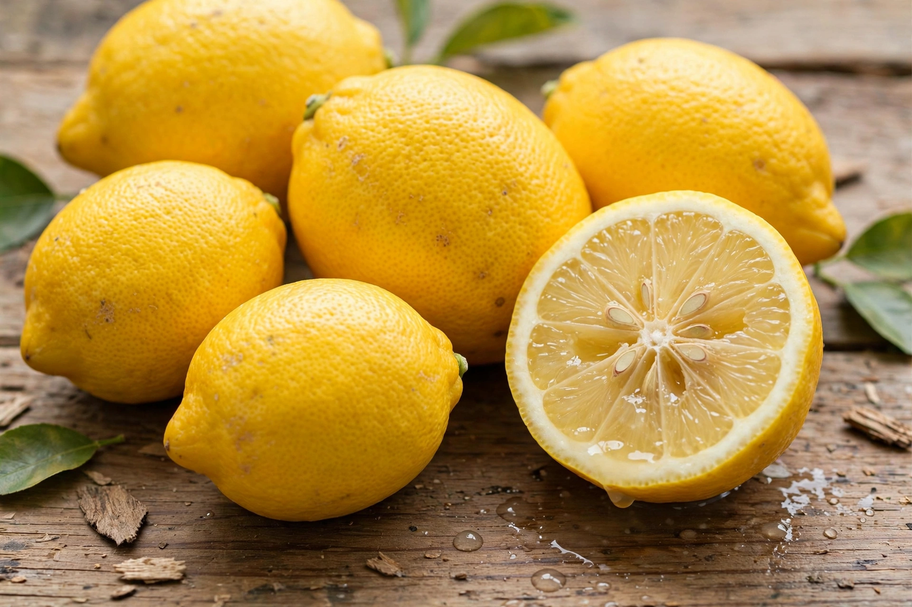

Lemon
From Wikipedia, the free encyclopedia

The lemon (Citrus × limon) is a hybrid citrus fruit, a cross whose parents include the citron and the bitter orange, grown for its sharply acidic juice used worldwide in cooking and drinks. The small evergreen tree bears oval yellow fruit rich in citric acid (roughly 5–6% of the juice) and vitamin C. Lemons originated somewhere in northeast India, northern Myanmar and China, travelled through the Middle East, and were spread around the Mediterranean by Arab traders from around the 10th century. India, Mexico, China and Argentina are among the largest producers.
History
Lemons were a luxury in ancient and medieval Europe; the Romans knew them but they remained rare until Arab agronomists established them in Spain and Sicily. Columbus carried citrus seed to the Americas in 1493, and Spanish missions planted lemons in California and Florida. In the 18th and 19th centuries lemon juice (later largely lime juice) became the British Royal Navy's weapon against scurvy, one of the earliest triumphs of nutritional medicine. The two dominant commercial varieties, Eureka and Lisbon, are both bud sports selected in the 19th century; the Meyer lemon, a sweeter lemon–orange cross popular with home cooks, is a separate type.
Culinary and other uses
Lemon juice, zest and wedges season everything from salad dressings and marinades to hollandaise-adjacent sauces, lemonade and cocktails; the juice's acid "cooks" seafood in ceviche and keeps cut fruit from browning. Preserved lemons are a cornerstone of Moroccan cooking, and limoncello liqueur is made from the zest. Citric acid extracted from lemons (now mostly produced by fermentation) flavours soft drinks and preserves. Lemon oil from the peel goes into cleaning products and perfumery, and the fruit's image is a universal shorthand for sharpness and freshness.
Cultivation
Lemon trees flower and fruit almost continuously in warm climates, so a single tree may carry ripe fruit, green fruit and blossom at once. They are more cold-sensitive than oranges and are grafted onto hardy rootstocks. Commercial fruit is picked green-yellow and de-greened in storage. Because lemons are picked year-round, supply is steadier than for most citrus.